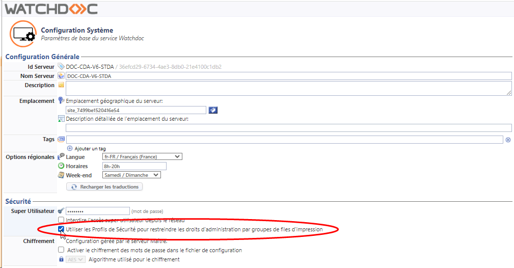
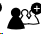
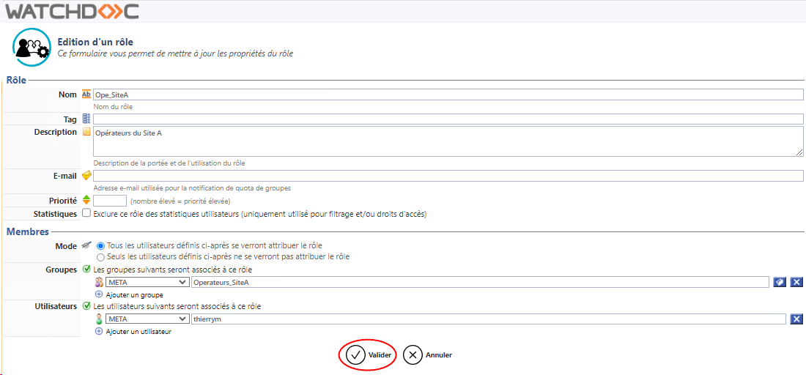
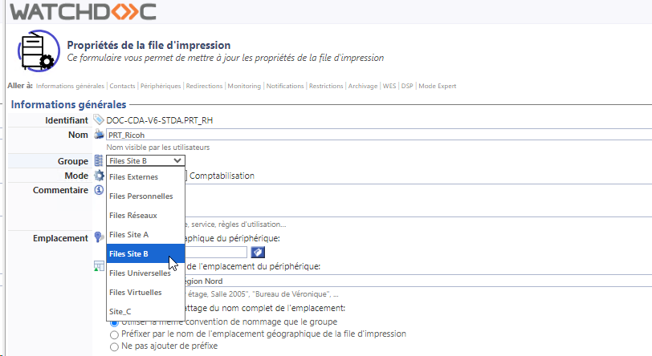
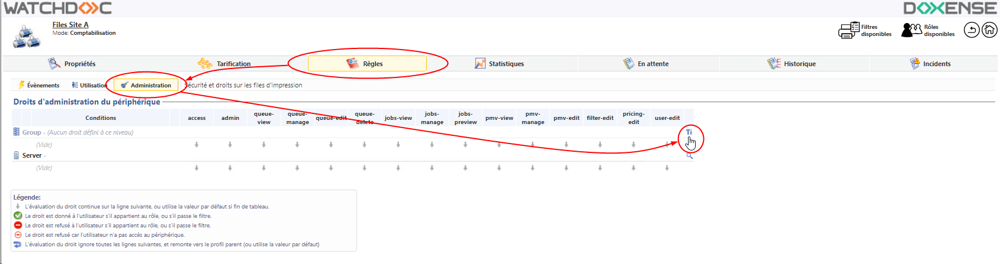
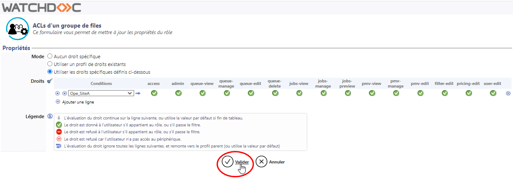
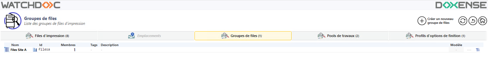

Principe
Lorsque le parc de périphériques d'impression est important, il peut être utile de gérer les droits d'administration des groupes de files, de manière à ce que les opérateurs d'un site accèdent uniquement au groupe de files qu'ils doivent gérer, sans être parasités par les files d'autres groupes.
Ainsi, si vous disposez d'un parc de périphériques d'impression répartis entre un Site A et un Site B, la gestion des droits sur les groupes de files permet aux opérateurs du Site A de ne pas avoir accès à la gestion des files du Site B (et réciproquement), ce qui facilite la gestion courante des files dont ils ont la responsabilité.
Cette configuration nécessite la configuration de rôles, de groupes de files, de droits d'administration et de profils de sécurité dans Watchdoc.
Prérequis
Avant de mettre en oeuvre la délégation de l'administration des files, nous vous recommandons définir préalablement l'organisation des tâches de gestion au sein de l'établissement.
Pour configurer ces droits, il convient idéalement, de disposer de groupe d'utilisateurs distincts créés dans l'annuaire ("Opérateurs_Site_A" et "Opérateurs_Site_ B", par exemple). De cette manière, il n'est pas nécessaire de modifier le rôle dans Watchdoc lorsque des membres intègrent ou quittent le groupe.
Si ces groupes n'existent pas dans l'annuaire, les utilisateurs autorisés à gérer les groupes de files peuvent cependant être ajoutés nominativement dans Watchdoc.
Les étapes de cette configuration sont les suivantes :
-
activation de la fonction ;
-
création de rôles dédiés ;
-
création et configuration des groupes de files ;
-
configuration des droits d'accès ;
Procédure
Activer l'utilisation des Profils de sécurité
Pour activer les Profils de sécurité pour restreindre les droits sur les groupes de files :
-
accédez à l'interface web d'administration de Watchdoc en tant qu'administrateur ;
-
depuis le Menu principal, section Configuration, cliquez sur Configuration avancée ;
-
dans l'interface Configuration avancée, cliquez sur Configuration Système ;
-
dans la section Sécurité, cliquez sur le bouton Utiliser les Profis de sécurité pour restreindre les droits d'administration par groupes de files d'impression :

-
Validez la Configuration Système.
Créer de nouveaux rôles
Pour distinguer les opérateurs autorisés à gérer les files du Site_A des opérateurs autorisés à gérer les files du Site_B, il est nécessaire de créer des rôles distincts. Pour créer les rôles :
-
depuis le Menu principal, section Gestion, cliquez sur Rôles & Services :
-
dans la liste des Rôles & Services cliquez sur le bouton

Créer un nouveau rôle : -
dans l'interface Création d'un rôle, configurez le rôle en lui attribuant au minimun un Nom (Ope_Site_A dans l'exemple) ;
-
dans la section Membres, sélectionnez le groupe de l'annuaire autorisé à gérer le premier site. S'il n'existe pas de groupe, sélectionnez les utilisateurs autorisés à gérer le premier site (vous pouvez aussi associer groupe et utilisateurs) ;
-
validez
 la création du premier rôle :
la création du premier rôle :
-
réitérez l'opération pour créer autant de rôles que nécessaire (2, dans notre exemple).
Créer les groupes de files et y associer les files
Pour créer les groupes de files (cf. Créer un groupe de files pour plus de détails) :
-
depuis le Menu principal, section Exploitation, cliquez sur Files d'impression, emplacements, groupes de files & pools ;
-
cliquez sous l'onglet Groupes de files ;
-
cliquez sur le bouton
 Créer un nouveau groupe de files ;
Créer un nouveau groupe de files ; -
configurez le groupe en précisant (entre autres paramètres) :
-
le nom du groupe
-
l'emplacement associé au groupe
-
-
retournez dans l'interface de configuration des files d'impression (Menu principal, section Exploitation, Files d'impression, emplacements, groupes de files & pools, onglet Files d'impression) ;
-
dans la liste des files, pour chaque file à intégrer au groupe, cliquez sur le bouton
 pour éditer les propriétés de la file ;
pour éditer les propriétés de la file ; -
dans la section Informations générales, sélectionnez le Groupe de files auquel appartient la file :

-
validez la configuration de la file;
-
réitérez l'opération pour toutes les files appartenant au groupe.
èUne fois le groupe de files configuré, appliquez-lui des droits d'administration.
Appliquer un droit d'administration sur un groupe de files
Pour appliquer un droit d'administration sur le groupe :
-
depuis le Menu principal, section Exploitation, cliquez sur Files d'impression, emplacements, groupes de files & pools ;
-
cliquez sous l'onglet Groupes de files ;
-
dans la liste des groupes, cliquez sur le nom du groupe de files à configurer ;
-
dans l'interface de configuration du groupe, cliquez sur l'onglet Règles :
-
dans l'interface Règles, cliquez sur le bouton Administration :
-
dans la section Droits d'administration du périphérique, éditez les droits du Groupe en cliquez sur le bouton
: 
-
dans l'interface ACLs d'un groupe de files, cochez le bouton-radio Utiliser les droits spécifiques ci-dessous :
-
dans la colonne Conditions, sélectionnez le groupe des utilisateurs autorisés à gérer le groupe de files ;
-
configurez ensuite les droits accordés au groupe d'utilisateurs pour le groupe de files concerné, en accordant au minimum le droit d'administration (admin) ;
-
validez les droits spécifiques une fois configurés :

è Pour vérifier la configuation, demandez à un membre d'un groupe d'opérateurs de s'authentifier sur le site d'administration. Dans la liste des groupes de files, il voit uniquement le groupe de files qu'il est autorisé à gérer (ou les files dans la liste des files d'impression) :
